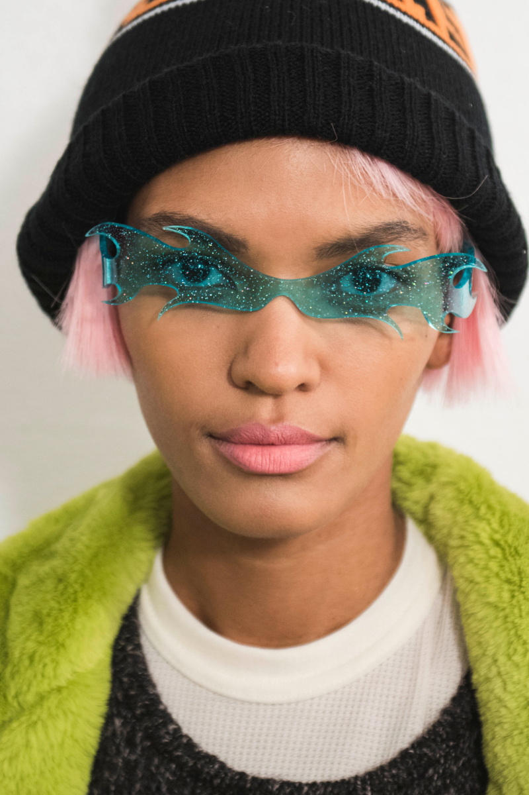
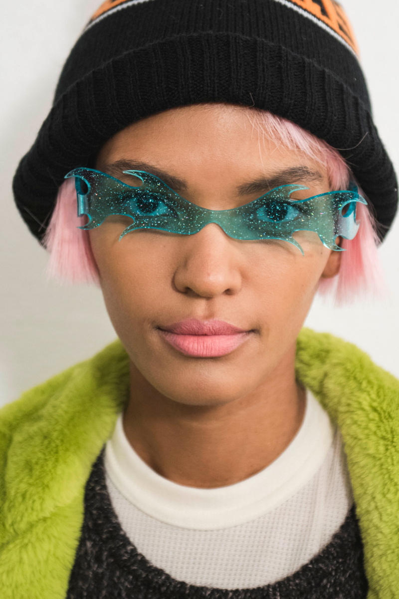
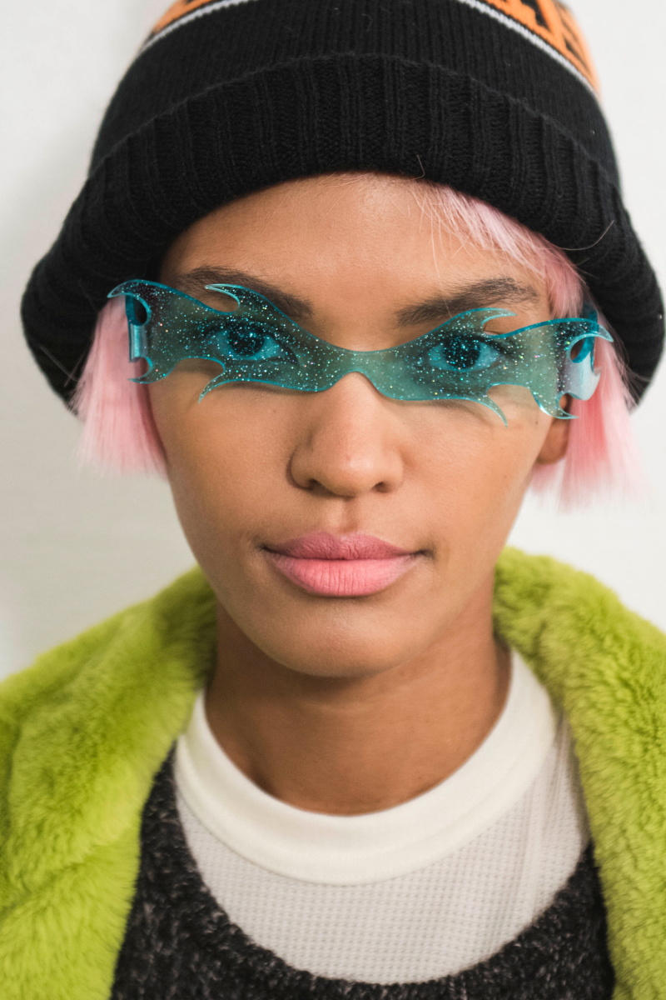

Summer sunnies
We jumped on a call with top eyewear designer, Poppy Lu, from her home in New York City to discuss what's in and what's not in, for this summer's sunglasses look.

We jumped on a call with top eyewear designer, Poppy Lu, from her home in New York City to discuss what's in and what's not in, for this summer's sunglasses look.


Is it too much to hope that we finally could have a tipping point in sustainable thinking and climate change? We asked fashion designer, Ronen Hill, if this summer's collection will be the most eco-friendly ever.